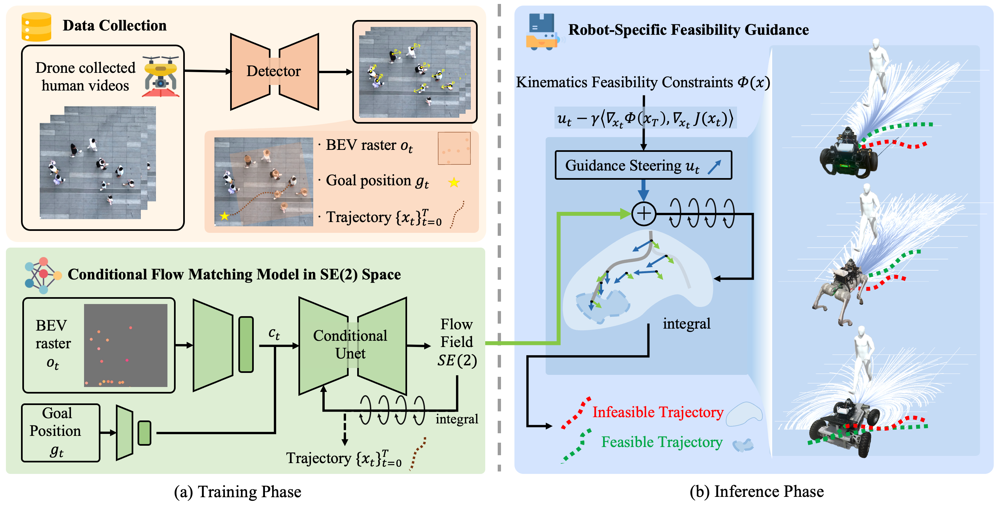

Enabling robots to navigate safely and efficiently in dynamic, crowded environments requires learning from large-scale demonstrations, which are costly and unsafe to collect on physical platforms. While human videos offer a rich and scalable alternative, transferring these motion patterns to robots is challenged by the embodiment gap across observation and action spaces. This paper presents Human2Nav, a data efficient framework that learns navigation policies directly from human videos via test-time feasibility-guided flow matching. Human2Nav employs a bird's-eye-view representation to align visual observations and trains a conditional flow matching model to capture nuanced human navigation patterns. Crucially, we introduce a training-free feasibility guidance mechanism that during inference steers generated trajectories to satisfy heterogeneous robot-specific kinematic and dynamic constraints without retraining. Extensive experiments in simulation and on real-world heterogeneous robotic platforms demonstrate that Human2Nav achieves superior data efficiency and navigation performance compared to model-based and learning-based baselines, while ensuring safe and executable trajectories across diverse crowd scenarios.

@INPROCEEDINGS{zhang2026human2nav,
author={Zhang, Shenghong and Chen, Junjie and Yan, Sichi and Ban, Yutong and Li, Xiao},
booktitle={2026 International Conference on Robotics and Automation (ICRA)},
title={Human2Nav: Learning Crowd Navigation from Human Videos across Robots via Feasibility-Guided Flow Matching},
year={2026},
volume={},
number={},
pages={},
keywords={},
doi={}
}